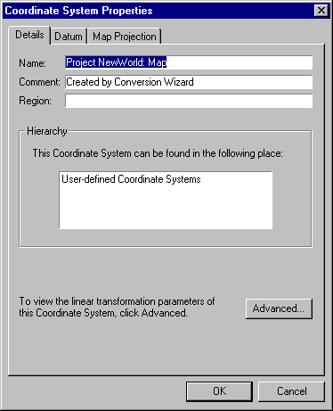

Viewing/ Editing the current Coordinate System
You may edit details of the current coordinate system for the map or dataset, depending on the type of system it is. There are four types of coordinate systems used in MapLink Pro Studio:
- MapLink Pro pre-defined coordinate systems - these are not editable
- User-defined coordinate systems - these are fully editable
- The two MapLink Pro editable coordinate systems:
- The Default Map Coordinate System
- The Default Dataset Coordinate System
These are partly editable. Projection, datum and linear transformation details for these can be altered, but the name, comment and region information cannot. These have been set up for ease of use during trial and experimentation, as an alternative to using the Coordinate System Wizard.
- The Default Runtime Projection Coordinate System - Only the datum information is editable.
To view the properties of the current coordinate system, or to edit it (if editable):
- Select either Map | Output Coordinate System or Dataset | Input Coordinate System as appropriate.
- From the Coordinate System page, click Edit... (if the system is editable) or View... (if the system is not editable)

This section has three pages you can view or edit (depending on the kind of system):
- Details
- Datum
- Map Projection (only map projections that are compatible with the selected datum type will be available)
- To view or edit the linear transform information, click Advanced. This will take you to the Linear Transform page
- Edit as required and then click OK
- Click OK to return to the Coordinate System page
- Click OK to return to the main screen
- If 'automatic data loading ' has been disabled, you will need to reload the layer before viewing the map with the new coordinate system information applied.